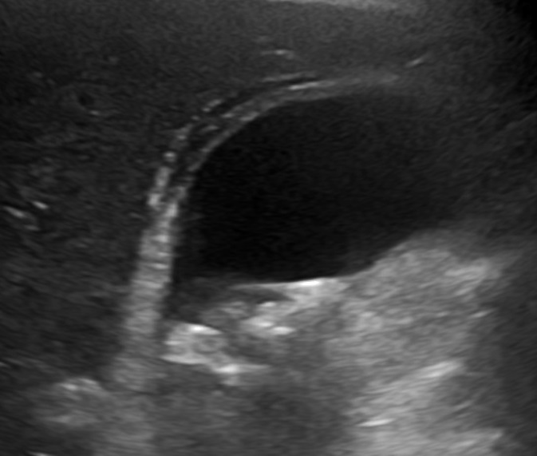
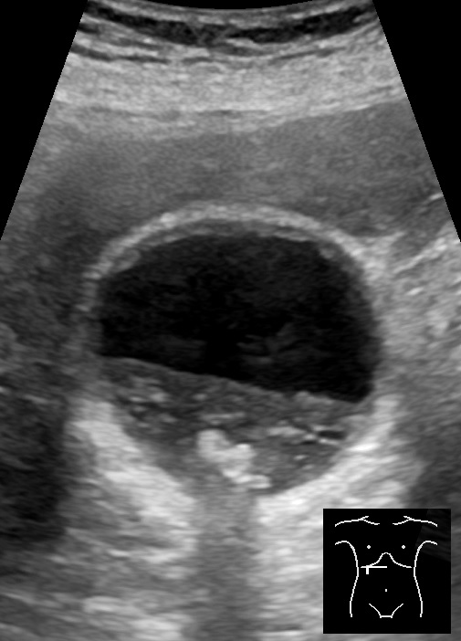
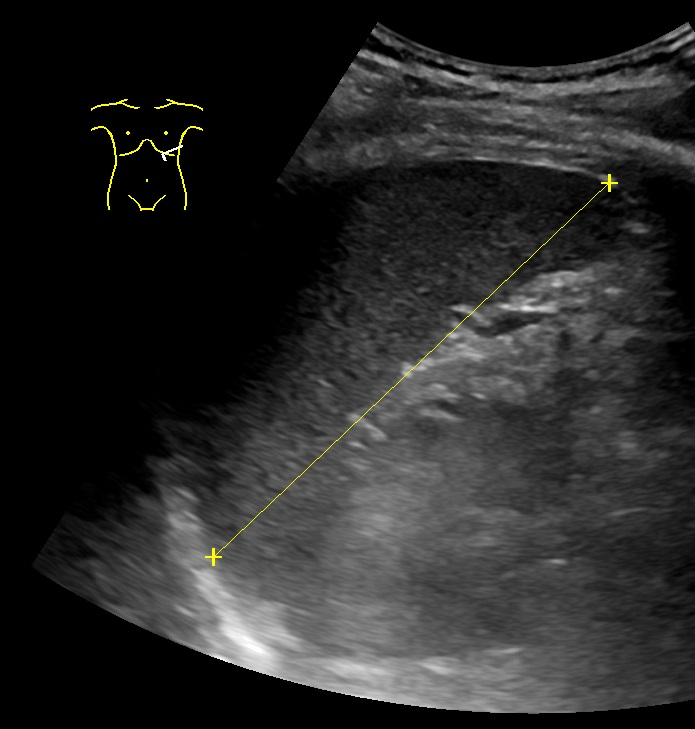
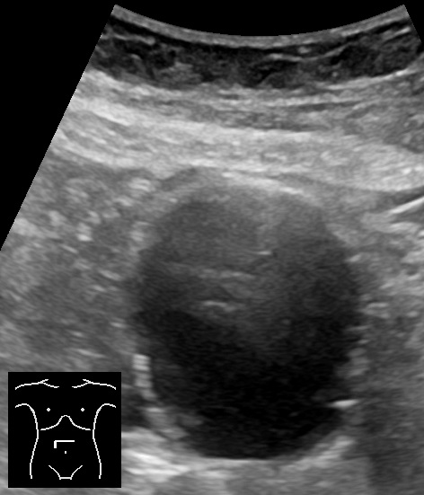
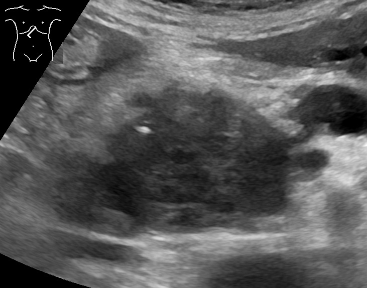
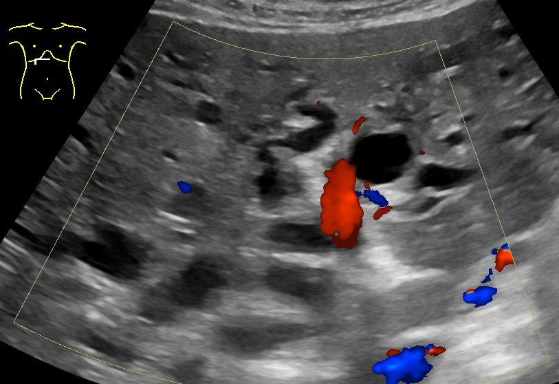
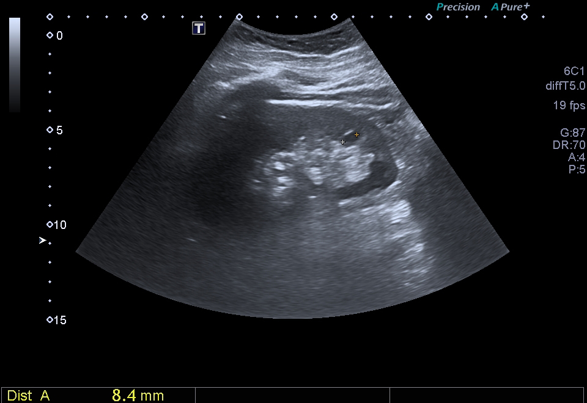

Masse abdominale
Dix diagnostics en concurrence
- DX.1 — Fécalome Ne rang : on l’évoque avant l’occlusion, car plus de 3 niveaux hydro-aériques orientent vers l’iléus plutôt que vers une simple stase[3].
- DX.2 — Globe vésical Ne rang : la matité hypogastrique médiane se vide souvent, tandis que l’échographie ne vient que si le relief persiste[6].
- DX.3 — Hépatomégalie Premier relief de l’hypochondre droit, car une douleur de cet étage oriente vers l’échographie[3].
- DX.4 — Cholécystite aiguë Diagnostic fréquent d’une douleur abdominale aiguë, car l’échographie cherche à confirmer ou à écarter la vésicule[6].
- DX.5 — Splénomégalie Ne rang : masse de l’hypochondre gauche, et le même étage se clarifie d’abord par l’échographie[3].
- DX.6 — Plastron appendiculaire Ne rang : l’appendicite figure parmi les indications majeures d’une échographie pour douleur aiguë, donc le plastron se cherche avant la tumeur[6].
- DX.7 — Anévrisme de l’aorte abdominale Forme fréquente chez l’homme âgé, car la prévalence masculine rapportée va de 6 à 8 %[5].
- DX.8 — Sarcome des tissus mous abdominaux Ne rang : beaucoup de ces lésions apparaissent par hasard sur une image demandée pour une gêne, donc elles ne précèdent pas les causes banales[2].
- DX.9 — Péritonite diverticulaire 🚩 E2 Ne rang : la diverticulite se cherche déjà devant une douleur aiguë, et la forme péritonéale tue en heures[6].
- DX.10 — Rupture d’anévrisme de l’aorte abdominale 🚩 E1 Forme rare au cabinet au regard de l’incidence hospitalière masculine des ruptures, qui reste de 2,7 pour 100,000[4].
1. Définition et sémantique
Une tuméfaction abdominale est un relief que la main garde quand la paroi se relâche, car un simple bord d’organe chez un sujet maigre s’efface[1].
La recommandation de 2021 fixe un seuil opérationnel pour les parties molles[1].
Au-delà de 5 cm, une lésion profonde, croissante, atypique ou douloureuse part vers un centre, donc on ne la traite pas comme un lipome de cabinet[1].
Le mot masse ne signe pas un sarcome[1].
On retient que le même mot couvre la paroi, la cavité péritonéale et le rétropéritoine, car le siège change l’examen[2].
On écarte le synonyme tumeur tant que l’histologie manque, puisque la stase stercorale et la vessie pleine imitent un volume[1].
Un sac aortique entre dans le même mot clinique, or l’examen physique y est peu sensible[5].
Ce qui s’en approche sans en être : une voussure pariétale mobile avec la peau, un globe que le drainage efface, un foie bas chez un sujet longiligne[1].
Ce qui s’en distingue encore : la douleur d’hypochondre sans relief, que l’échographie éclaire quand même[3].
L’année 2021 date cette recommandation suisse, et elle ne définit pas toutes les causes[1].
La recommandation de 2021 ne couvre pas le vaisseau, et le sac aortique relève d’un autre texte[1].
En 2004, la rupture est décrite comme le moment où le diagnostic se fait souvent, avec une mortalité de 80 à 90 %[5].
On distingue trois sièges, la paroi, la cavité et le rétropéritoine, car chacun change l’image utile[2].
On détaille le seuil des parties molles, car 5 cm changent le lieu de la prise en charge[1].
Seuil de 5 cm
Profondeur, croissance, aspect atypique ou symptôme suffisent aussi, même sous ce diamètre, pour adresser[1].
La biopsie radioguidée suit la suspicion, et le colloque discute radiothérapie et chimiothérapie[1].
La chirurgie reste le traitement standard, avec un suivi long parce que la récidive est fréquente[1].
2. Épidémiologie (Suisse, puis Europe)
Entre 2009 et 2018, les hôpitaux suisses ont traité 10,728 séjours pour anévrisme de l’aorte abdominale[4].
Les hommes représentent 87,1 % de cette cohorte, donc le sexe structure déjà la probabilité[4].
L’incidence hospitalière standardisée des formes non rompues atteint 19,7 pour 100,000 hommes[4].
Elle tombe à 2,6 pour 100,000 femmes, ce qui inverse le poids du dépistage[4].
Les ruptures traitées ou non restent à 2,7 pour 100,000 hommes[4].
Chez les femmes, ce taux est de 0,4 pour 100,000, or la mortalité y demeure lourde[4].
Dans la cohorte, 22,7 % des séjours arrivent déjà rompus[4].
Parmi ces ruptures, 46 % sont opérées et 54 % restent en traitement conservateur[4].
Hors hôpital, la prévalence masculine citée va de 6 à 8 %[5].
Chez des femmes de 65 à 80 ans, une série montre 1,3 %[5].
La maladie est donc relativement fréquente chez l’homme âgé, tandis que la rupture qui tue reste plus rare[5].
La mortalité ajustée des ruptures traitées atteint 19,7 % chez l’homme et 32,4 % chez la femme[4].
En électif, elle a baissé de 2,4 % en 2009 à 0,6 % en 2018 chez l’homme[4].
Chez la femme opérée à froid, la mortalité ajustée reste en recul, de 5,5 % à 1,4 % sur la même décennie[4].
Les sarcomes se divisent en formes des parties molles et en formes de l’os, et la récidive est fréquente[1].
Beaucoup se découvrent par hasard sur une image demandée pour une gêne, donc leur part au cabinet reste basse[2].
En 2017, la cholécystite, l’appendicite et l’ascite dominent les indications d’échographie d’une douleur aiguë[6].
L’Europe a servi de cadre au dépistage des hommes de 65 ans, car la Suisse publie surtout l’incidence hospitalière[5].
Plusieurs pays européens traitent jusqu’à 80 % des cas électifs par voie endovasculaire[4].
La part tombe vers 60 % quand l’anévrisme est déjà rompu, en revanche la Suisse a longtemps gardé la voie ouverte[4].
Une série montre 5,8 % de mortalité à 30 jours, tandis qu’une autre reste à 2,7 %[5].
Les essais cités comptent plus de 98 % d’hommes dans la série américaine, et plus de 80 % dans la série anglaise[5].
L’essai a invité 34 000 patients et a suivi 34 000 contrôles[5].
Le suivi moyen cité dure 4,1 années, et une croissance de 1 cm/an resserre déjà la surveillance[5].
Sur 2430 ruptures hospitalières, 46,2 % ont été opérées[4].
Les hôpitaux universitaires en ont reçu 33,1 %, les autres hôpitaux majeurs 56,3 %, et les petits sites 10,6 %[4].
La part endovasculaire des ruptures est passée de 29,1 % à 44,3 %[4].
En 2016, la Suisse figurait parmi trois pays sur douze sans cursus spécifique d’échographie en médecine de famille[6].
En urgence, la mortalité opératoire avoisine 40 %, alors que l’électif reste entre 5 et 6 %[5].
Les formes non rompues touchent 19,7 hommes pour 100,000, contre 2,6 femmes pour 100,000[4].
3. Physiopathologie
Chaîne de la paroi au vaisseau
L’amorce peut être pariétale : la graisse sous-cutanée, le fascia, puis un franchissement vers la profondeur[2].
L’échographie juge cette graisse, la vascularisation et le passage du fascia, donc elle relie le tissu à l’image[2].
Vient ensuite la cavité péritonéale, où une lésion se développe loin de la main[2].
Le rétropéritoine ferme la chaîne des parties molles, et on y cherche aussi des métastases au scanner thoraco-abdomino-pelvien[2].
Le vaisseau suit une autre chaîne : un diamètre au-delà de 3 cm définit déjà l’anévrisme[5].
Le sac grandit, le thrombus mural se forme, puis la paroi cède, ce qui explique la rupture[5].
Une croissance de 1 cm/an accélère la décision, car le risque dépasse alors celui de l’attente[5].
L’intestin obstrué se distend et dresse des niveaux, donc la douleur diffuse n’est pas une masse pleine[3].
Si l’obstacle est duodénal ou très proximal, ces niveaux manquent, or la souffrance existe quand même[3].
La pancréatite, quand on la suspecte, commence par l’inflammation locale, et le scanner la montre avant les calculs[3].
La vésicule enflammée épaissit sa paroi et bloque le fond, ce qui crée un relief sous le foie[6].
Le maintien d’un sarcome passe par une récidive fréquente, donc le suivi reste long après la chirurgie[1].
La radiothérapie et la chimiothérapie se discutent en colloque, car elles ne remplacent pas l’exérèse[1].
La morphine freine la douleur sans corriger la chaîne mécanique, et un iléus paralytique impose son arrêt[7].
On suit la graisse sous-cutanée jusqu’au fascia, car l’échographie montre le franchissement quand il existe[2].
Le thrombus mural se forme dans le sac, puis la paroi cède, et la rupture impose une autre conduite[5].
Un obstacle haut reste possible quand les niveaux manquent, donc on ne conclut pas à un abdomen libre[3].
La chirurgie reste le traitement standard du sarcome, et le colloque discute radiothérapie et chimiothérapie[1].
La vésicule confirme ou écarte une cause fréquente de douleur aiguë, et le foie se voit dans le même temps[6].
L’iléus paralytique, confirmé ou seulement soupçonné, impose l’arrêt de Morphin®[7].
| Perturbation | Exploration | Thérapeutique |
|---|---|---|
| Le fascia est franchi par une lésion profonde[2]. | L’échographie montre ce franchissement du fascia[2]. | Le centre discute la chirurgie, qui reste le traitement standard[1]. |
| Le diamètre dépasse 3 cm puis grandit[5]. | L’échographie mesure le plus grand axe[5]. | On adresse à partir de 5,5 cm chez l’homme[5]. |
| Le grêle se distend au-dessus d’un obstacle[3]. | Les niveaux au-dessus de 3 apparaissent sur le cliché debout[3]. | On lève l’obstacle au lieu de purger une simple stase[3]. |
| Le pancréas s’enflamme et le scanner le montre[3]. | Le scanner vient en premier dans cette suspicion[3]. | L’échographie ne vient qu’ensuite, pour les calculs[3]. |
4. Démarche diagnostique
On commence par ce qui tue : la rupture, dont la mortalité masculine ajustée reste de 19,7 %[4].
Un relief battant, une douleur lombaire et une chute de pression orientent vers E1, donc on n’attend pas une belle image[5].
Vient E2, la péritonite diverticulaire, car la diverticulite se cherche déjà dans la douleur aiguë[6].
Une défense diffuse avec suspicion de perforation écarte le cliché simple de confort, et l’abdomen sans préparation ne sert que dans ce doute[3].
Puis les causes fréquentes : fécalome si les niveaux ne dépassent pas le seuil de 3[3].
Le globe se vide, la vésicule se confirme ou s’écarte, l’appendicite se localise[6].
L’anévrisme non rompu, fréquent chez l’homme âgé, se mesure avant de parler de seuil opératoire[5].
Le sarcome ne vient qu’après, quand la lésion dépasse 5 cm ou grandit, car le centre précède la biopsie au bloc[1].
Le piège est d’enlever a minima une lésion atypique, donc la biopsie radioguidée reste la règle si le doute persiste[1].
Autre piège : conclure à un iléus proximal parce que les niveaux manquent, alors que l’obstacle est haut[3].
Si le diamètre dépasse 5,5 cm chez l’homme, l’avis chirurgical s’impose[5].
Si la masse est sous-cutanée, l’échographie tranche la graisse et le fascia avant le scanner[2].
On classe ensuite le sac non rompu, fréquent chez l’homme âgé, dont la prévalence va de 6 à 8 %[5].
Le transfert vers l’hôpital majeur précède le bilan de confort, puisque 97,3 % des ruptures traitées s’y font[4].
On n’adresse pas au centre une voussure qui s’efface quand la paroi se relâche, car le seuil de 5 cm vise une lésion qui persiste[1].
| Diagnostic | Signe qui oriente | Examen qui tranche | Mécanisme | Conduite immédiate | Rang E |
|---|---|---|---|---|---|
| Le fécalome se pétrit et ne fixe pas la main[3]. | Les niveaux restent au plus à 3, sinon l’iléus prend la place[3]. | Le cliché debout montre la distension quand elle existe[3]. | La stase encombre la lumière et la paroi reste intacte[3]. | On lève la stase avant de programmer un scanner[3]. | Aucun rang E ne s’applique, et cette stase reste mécanique[3]. |
| Le globe donne une matité médiane tendue, que l’on reconnaît[6]. | Le drainage l’efface, puis l’échographie ne sert que si le relief revient[6]. | L’échographie pelvienne confirme une vessie encore pleine[6]. | L’urine ne s’écoule plus et la vessie se distend[6]. | On sonde avant de parler d’une tumeur du pelvis[6]. | Une rétention simple reste sans rang E[6]. |
| L’hépatomégalie suit le rebord droit à l’inspiration[3]. | L’échographie est recommandée pour cet hypochondre[3]. | Elle montre le foie que la main ne fait que deviner[6]. | Le parenchyme augmente de volume ou se charge[6]. | On image avant de conclure à une tumeur du flanc[3]. | Une grosseur isolée du foie reste sans rang E[3]. |
| La cholécystite se confirme ou s’écarte à l’échographie[6]. | Douleur sous le foie et fièvre orientent vers la vésicule[6]. | L’échographie de l’hypochondre vient en premier[3]. | La paroi vésiculaire souffre et le fond se bloque[6]. | On traite la vésicule si l’image la retient, sans partir vers l’aorte[6]. | Cette vésicule enflammée reste sans rang E[6]. |
| La splénomégalie occupe l’hypochondre gauche, et on la sépare du côlon[3]. | L’échographie de cet étage la sépare du côlon[3]. | Le pôle inférieur se mesure sur une coupe longue[6]. | La pulpe augmente et déborde le gril costal[6]. | On cherche la cause hématologique ou portale après l’image[3]. | Cette grosse rate reste sans rang E[3]. |
| Le plastron appendiculaire empâte la fosse droite, et on le palpe avant l’image[6]. | Dans la douleur aiguë, on cherche l’appendicite à l’échographie[6]. | Elle localise l’empâtement mieux que la seule main[6]. | L’appendice enflammé se colle aux organes voisins[6]. | On adresse si la défense s’étend, sans biopsier au lit[6]. | La forme locale reste sans rang E[6]. |
| L’anévrisme non rompu est relativement fréquent chez l’homme âgé[5]. | L’échographie mesure un diamètre au-delà de 3 cm[5]. | Deux plans évitent de sous-estimer le plus grand axe[5]. | La média s’amincit et le sac se dilate[5]. | On surveille sous 5,5 cm et on adresse au-delà[5]. | Pas de rang E tant que la paroi tient[5]. |
| Le sarcome des parties molles siège sur la paroi, le péritoine ou le rétropéritoine, et on le situe[2]. | Le seuil de 5 cm ou la croissance impose l’adressage[1]. | L’échographie d’abord si la lésion est sous-cutanée, puis le scanner[2]. | Le clone mésenchymateux grossit dans un plan profond[1]. | On fait une biopsie radioguidée et on discute au colloque[1]. | Ce sarcome reste sans rang E par défaut[1]. |
| La péritonite diverticulaire défend l’abdomen et tue en heures, donc on la retient comme E2[6]. | Le doute de perforation ramène l’abdomen sans préparation, puis le scanner confirme[3]. | L’échographie peut chercher la diverticulite, sans l’exclure[6]. | La perforation laisse passer le contenu digestif, ce qui impose un geste[3]. | On traite E2 sans le confondre avec un fécalome[6]. | Le rang affiché est E2 pour cette péritonite[6]. |
| La rupture d’anévrisme concentre une mortalité masculine qui reste de 19,7 %[4]. | Le relief expansif et le collapsus tranchent mieux que le diamètre seul[5]. | Le centre majeur opère, car 97,3 % de ces traitements s’y font[4]. | La paroi cède et le sang gagne le rétropéritoine, ce qui impose E1[5]. | On transfert vers l’hôpital majeur avant le bilan de confort[4]. | Le rang affiché est E1 pour cette rupture[4]. |
5. Anamnèse ciblée et drapeaux rouges
On date la douleur, car une rupture se révèle souvent tard, au moment où la paroi cède[5].
Une syncope avec un relief battant pèse lourd, puisque 22,7 % des séjours hospitaliers arrivent déjà rompus[4].
Le dépistage discuté vise les hommes de 65 ans et plus, or le diagnostic est souvent tardif[5].
On demande si le volume grandit, car la croissance fait partie des motifs d’adressage au centre[1].
Une gêne ancienne avec découverte fortuite rassure un peu, tandis qu’on relance le bilan devant une douleur nouvelle[2].
L’arrêt des gaz et des selles oriente vers l’iléus, donc on ne palpe pas une stase comme une tumeur fixe[3].
La fièvre avec douleur de la fosse iliaque droite fait chercher l’appendicite, et la fosse gauche fait chercher la diverticulite[6].
Une douleur d’hypochondre après un repas gras fait chercher la vésicule, car l’échographie est alors recommandée[3].
Un tableau qui évoque une pancréatite change l’ordre, puisque le scanner passe devant[3].
On liste les morphiniques déjà pris, car la dose suivante dépend de l’intensité et du traitement antérieur[7].
Chez la femme de 65 à 80 ans, la prévalence citée est de 1,3 % seulement, donc l’anévrisme y pèse moins[5].
L’amaigrissement et un volume atypique ne prouvent pas le sarcome, or ils interdisent l’exérèse de passage[1].
On demande si la masse a été vue d’abord sur une image, car la découverte par hasard change l’urgence perçue[2].
On demande l’âge et le sexe, car le dépistage discuté concerne les hommes de 65 ans et plus[5].
On situe la douleur, car l’hypochondre oriente vers l’échographie et la douleur diffuse vers l’iléus ou la perforation[3].
| Drapeau | Signification | Action |
|---|---|---|
| Un collapsus avec relief battant annonce la rupture, et on la traite d’abord[4]. | La mortalité masculine ajustée reste de 19,7 %[4]. | On oriente vers un hôpital majeur, où se font 97,3 % des traitements[4]. |
| Une douleur brutale du dos chez l’homme âgé pèse, et on la retient[5]. | La rupture est souvent le premier diagnostic posé[5]. | On ne renvoie pas le patient vers un contrôle dans l’année[5]. |
| Une défense diffuse fait craindre la perforation[3]. | L’abdomen sans préparation ne sert que dans ce doute[3]. | On ne se contente pas d’un laxatif[3]. |
| Une lésion de plus de 5 cm qui grandit est atypique[1]. | Le sarcome entre alors dans les hypothèses, et on adresse[1]. | On adresse au centre plutôt que de biopsier au bloc[1]. |
| Une dépression respiratoire sous Morphin® impose l’arrêt de l’ampoule[7]. | Cette situation figure dans les prudences extrêmes, et on l’applique[7]. | On arrête l’ampoule et on prépare 0,4 à 2 mg de naloxone[7]. |
6. Examen physique ciblé, région par région
Peau et paroi
On regarde d’abord la peau, car une masse qui suit le pincement reste pariétale[2].
L’échographie d’une lésion sous-cutanée montre la graisse, le flux et le fascia[2].
Au-delà de 5 cm ou en cas de croissance, on adresse cette lésion hors du cabinet[1].
Hypochondres
Sous le rebord droit, on suit le foie à l’inspiration, et une douleur de cet étage indique l’échographie[3].
La vésicule se cherche dans le même geste, car on peut confirmer ou écarter une cholécystite[6].
À gauche, la rate descend à l’inspiration, donc une masse fixe de l’hypochondre gauche n’est pas un côlon mobile[3].
Flancs et fosses
La fosse droite douloureuse et fébrile oriente vers l’appendicite, tandis que la fosse gauche oriente vers la diverticulite[6].
Un côlon gauche plein et pétrissable, sans niveau au-dessus de 3, signe le fécalome[3].
Un flanc plein et fixe peut être rétropéritonéal, et le scanner thoraco-abdomino-pelvien cherche alors les métastases[2].
Pelvis et ligne médiane
L’hypogastre mate et tendu évoque le globe, donc on le vide avant de décrire une tumeur du pelvis[6].
L’IRM devient une alternative surtout dans le pelvis, quand le scanner ne suffit pas à fixer les plans[2].
Sur la ligne médiane, on cherche un pouls expansif et non un simple battement transmis, car l’examen physique reste peu sensible[5].
On mesure ensuite par l’échographie en coupes transversale et longitudinale, afin de ne pas sous-estimer le plus grand diamètre[5].
Sur la paroi, on pince la peau : si la masse suit, elle reste pariétale, et l’échographie montre le fascia[2].
L’examen physique reste peu sensible pour le sac, donc une aorte non palpée ne rassure pas chez l’homme âgé[5].
Le flanc droit douloureux après un repas oriente vers l’hypochondre, et l’échographie y vient en premier[3].
La fosse iliaque gauche douloureuse oriente vers la diverticulite, que l’on peut chercher à l’échographie[6].
On ausculte peu le sac : l’examen physique reste peu sensible, et la main ne remplace pas la mesure[5].
On confronte la douleur sous le foie à l’image de la vésicule, car l’échographie confirme ou écarte la cholécystite[6].
Vésicule — paroi et contenu déclive
La lumière anéchogène est la bile, et les échos déclives avec ombre postérieure sont des calculs ou de la boue[6].
Cette image répond à une douleur d’hypochondre, indication où l’échographie vient en premier[3].
Elle ne mesure pas l’aorte, donc un sac battant ne se conclut pas sur cette coupe[6].

Un second cliché montre le niveau déclive, car la boue et les calculs expliquent un relief sous-hépatique[6].
Vésicule — niveau déclive
La paroi fine autour d’une lumière noire n’est pas un sarcome, et le contenu déclive signe la bile épaisse[6].

On mesure la rate quand l’hypochondre gauche est plein, car l’échographie sépare la pulpe du côlon[3].
Rate — mesure du grand axe
Les curseurs du cliché suivent le grand axe, et le chiffre affiché sur la machine ne se devine pas à l’œil[6].
Une rate basse à l’inspiration reste un diagnostic d’hypochondre, pas un anévrisme[3].

7. Approche syndromique
7.1 Masse battante et collapsus
Le signe fonctionnel est une douleur lombaire ou abdominale brutale, et le signe physique est un relief expansif[5].
Le mécanisme est la déchirure du sac, dont la mortalité masculine ajustée reste de 19,7 %[4].
On cherche ce couple avant tout autre relief, car la mortalité de la rupture citée atteint 80 à 90 %[5].
7.2 Défense, fièvre et plastron
La douleur fébrile de fosse, la défense et un empâtement définissent le plastron ou la diverticulite compliquée[6].
Si la douleur devient diffuse et fait craindre une perforation, l’abdomen sans préparation reprend une place[3].
Des niveaux au-dessus de 3 avec un grêle distendu signent l’iléus sur le cliché debout[3].
7.3 Volume indolent
Ici la gêne est ancienne ou absente, et l’image a souvent précédé la main[2].
Le seuil de 5 cm, la profondeur et la croissance décident de l’adressage, donc le calme clinique ne ferme pas le dossier[1].
Un anévrisme entre 3 et 5,5 cm peut rester silencieux, or il entre quand même dans une surveillance[5].
L’ascite, elle, donne une matité déclive plutôt qu’un noyau dur, et l’échographie la montre[6].
Le couple douleur brutale et relief expansif oriente vers la rupture, dont la mortalité citée atteint 80 à 90 %[5].
En Suisse, 22,7 % des séjours pour anévrisme arrivent déjà rompus, donc on ouvre la conduite sur la rupture[4].
La chirurgie en urgence, dans l’essai cité, porte une mortalité à 30 jours de 37 %, contre 6 % à froid[5].
Le plastron fébrile de la fosse droite oriente vers l’appendicite, que l’échographie confirme ou écarte[6].
Si la défense devient diffuse, l’abdomen sans préparation reprend une place, car on suspecte une perforation[3].
Le volume indolent apparaît souvent sur une image demandée pour une gêne, et on ne le traite pas comme une urgence vasculaire[2].
Un sac silencieux entre 3 et 5,5 cm reste un anévrisme, et la surveillance annuelle concerne la tranche de 3 à 4,4 cm[5].
L’ascite se confirme à l’échographie, et la matité déclive ne se confond pas avec un noyau dur[6].
Même indolente, une lésion profonde au-delà de 5 cm impose l’adressage, car la taille fait partie des motifs[1].
Des niveaux nombreux, au-dessus de 3, avec un grêle distendu, signent l’iléus sur le cliché debout[3].
Dans ce tableau douloureux, on réserve Morphin®, à 10 mg pour 70 kg, à la nécessité absolue si la cause manque[7].
Un diamètre de 4,0 à 5,5 cm a été comparé dans une étude, et le seuil opératoire masculin reste plus haut[5].
8. Diagnostic positif et critères
En 2004, un diamètre au-delà de 3 cm définit déjà l’anévrisme dans l’essai de dépistage[5].
Ce seuil ne suffit pas à opérer, car les petits sacs se situent entre 3 et 5,5 cm et restent en surveillance[5].
Chez l’homme, 5,5 cm déclenche l’avis chirurgical[5].
Un grand sac, au-delà de 5,5 ou de 6 cm, relève de la chirurgie, donc le chiffre ne se choisit pas au jugé[5].
Une croissance de 1 cm/an suffit à resserrer la surveillance ou à adresser, même sous 5,5 cm[5].
En 2021, le sarcome des parties molles se suspecte au-delà de 5 cm, ou si la lésion est profonde, croissante, atypique ou symptomatique[1].
Aucun de ces traits ne remplace l’histologie, et la biopsie radioguidée se fait toujours en cas de suspicion[1].
Une exérèse locale a minima ne constitue pas un diagnostic, donc elle est refusée[1].
L’iléus se retient sur des niveaux au-dessus de 3 et un grêle distendu, au cliché debout[3].
L’absence de ces signes ne suffit pas si l’obstacle est proximal[3].
La cholécystite et l’appendicite se confirment ou s’écartent par l’échographie, sans seuil millimétrique unique dans ce texte[6].
La pancréatite suspectée se confirme d’abord au scanner, puis l’échographie cherche des calculs[3].
Les petits sacs se situent entre 3 et 5,5 cm, et ce texte de 2004 les sépare des grands[5].
Au-delà de 5,5 cm ou de 6 cm, on adresse, car le texte rend chirurgical un grand sac[5].
La biopsie radioguidée est exigée dès la suspicion, et elle précède le colloque[1].
En 2017, confirmer ou écarter la cholécystite, l’appendicite ou l’ascite reste l’usage principal de l’échographie de première ligne[6].
| Critère | Année | Ce qui suffit | Ce qui ne suffit pas |
|---|---|---|---|
| Le diamètre aortique au-delà de 3 cm définit le sac[5]. | Le texte de 2004 retient ce seuil de définition[5]. | Il suffit à nommer l’anévrisme déjà constitué[5]. | Il ne suffit pas à opérer[5]. |
| Le diamètre de 5,5 cm chez l’homme impose l’avis[5]. | Le même texte de 2004 fixe l’avis chirurgical[5]. | Il suffit à adresser le patient vers le chirurgien[5]. | Un sac de 4,0 cm ne suffit pas[5]. |
| Une lésion des parties molles au-delà de 5 cm impose l’adressage[1]. | Cette recommandation date de 2021 et reste en vigueur[1]. | Elle suffit à investiguer et à adresser[1]. | Elle ne suffit pas à sauter la biopsie radioguidée[1]. |
| Des niveaux hydro-aériques nombreux, au-dessus de 3, signent l’iléus[3]. | L’article d’imagerie date de 2013 et reste le guide du tri[3]. | Avec un grêle distendu, ils suffisent à retenir l’iléus[3]. | Leur absence ne suffit pas si l’obstacle est proximal[3]. |
9. Examens complémentaires
9.a Étalon
Pour une lésion des parties molles suspecte, l’étalon est l’histologie obtenue par biopsie radioguidée, car l’image ne nomme pas le type[1].
Pour l’aorte, l’étalon de mesure reste l’échographie du plus grand diamètre, en transversal et en longitudinal[5].
Quand la rupture est déjà probable et le pouls tient encore, le scanner du centre vasculaire fixe l’anatomie opératoire, puisque 97,3 % de ces traitements se font en hôpital majeur[4].
9.b Première intention
L’échographie vient en premier pour une douleur d’hypochondre[3].
Elle vient aussi en premier pour une masse sous-cutanée palpée[2].
En médecine de famille, elle confirme ou écarte cholécystite, appendicite ou ascite[6].
La diverticulite peut s’y chercher, or ce n’est pas l’indication la mieux établie du texte[6].
Le même outil dépiste l’aorte, car il est rapide et voit le vaisseau chez la très grande majorité des patients[5].
9.c Situations où l’ordre change
Si l’on suspecte une pancréatite, le scanner passe devant, puis l’échographie cherche les calculs[3].
Une insuffisance rénale grave impose la plus grande prudence pour Morphin®, et seule une nécessité absolue autorise l’ampoule[7].
Si le scanner ne suffit pas à fixer les plans, l’IRM sert d’alternative, surtout dans le pelvis[2].
L’abdomen sans préparation ne répond qu’au doute d’iléus ou de perforation, donc il ne classe pas une masse pleine[3].
9.d Deuxième intention
Le scanner thoraco-abdomino-pelvien complète l’échographie, et on y cherche des métastases[2].
Il précise un sac dont le collet n’est pas vu à l’échographie, car un anévrisme thoracique associé changerait la prise en charge[5].
Il confirme la pancréatite déjà suspectée, donc il n’est pas un examen de routine pour toute voussure[3].
En Suisse, la voie ouverte a concerné plus de 60 % des ruptures enregistrées dans le registre vasculaire cité[4].
La part endovasculaire des formes non rompues est passée de 46,5 % en 2009 à 67,0 % en 2018[4].
L’examen physique reste peu sensible, donc on mesure le diamètre, et un sac au-delà de 3 cm est déjà un anévrisme[5].
Le cliché debout montre des niveaux au-dessus de 3 quand le grêle se distend, et il ne sert pas à mesurer un sac[3].
L’histologie par biopsie radioguidée reste l’étalon d’une lésion suspecte, et l’image ne la remplace pas[1].
On lit le cliché axial de l’aorte avant de choisir le scanner, car le plus grand diamètre se juge déjà en deux plans[5].
Cliché — sac aortique axial
Modalité : échographie. Coupe : axiale. Position : décubitus. Latéralité : ligne médiane. Inscription : pictogramme de position, aucun nom de patient.

Si la pancréatite est suspectée, le scanner reste premier, et cette échographie ne le remplace pas[3].
Pancréas — plage hypoéchogène
La plage hypoéchogène de la loge explique un relief profond, or elle ne nomme pas à elle seule le cancer[3].
Un volume profond douteux part ensuite au scanner thoraco-abdomino-pelvien, et on l’y mesure[2].

On regarde le hile quand le foie est gros, car les voies biliaires et le flux se voient chez un opérateur formé[6].
Voies biliaires et Doppler
Les structures anéchogènes près du hile et le signal couleur distinguent canal et vaisseau[6].
Après un scanner de pancréatite, on cherche encore des calculs à l’échographie[3].

Un flanc plein peut être rénal, et l’échographie sépare le kyste liquidien d’une masse solide[6].
Rein — lésion anéchogène mesurée
Une lésion solide du rétropéritoine, elle, ne se clôt pas sur une image liquidienne[2].
Le cliché affiche une distance, que l’on lit sur l’appareil plutôt que de l’inventer[6].

Le sang ne nomme pas la masse, or il pèse quand la rupture est déjà dans la pièce, avec 22,7 % des séjours qui arrivent rompus[4].
Biologie — ce que le chiffre change
Une insuffisance rénale grave figure dans les prudences de Morphin®, donc le débit rénal se lit avant l’ampoule[7].
Dès que la pancréatite est suspectée, le texte de 2013 place le scanner en premier[3].
Un relief expansif avec chute de pression oriente vers la rupture, dont la mortalité citée atteint 80 à 90 %[5].
| Résultat | Signification | Conduite |
|---|---|---|
| Le plus grand diamètre aortique dépasse 5,5 cm[5]. | Le risque de rupture l’emporte sur la surveillance simple, et on adresse[5]. | On demande alors un avis chirurgical[5]. |
| Le diamètre reste entre 3 et 4,4 cm[5]. | Le sac est réel mais encore petit[5]. | On revoit le patient chaque année[5]. |
| Les niveaux dépassent 3 et le grêle se distend[3]. | L’iléus est présent sur le cliché debout[3]. | On cherche l’obstacle et on ne purge pas[3]. |
| L’échographie montre un passage du fascia[2]. | La lésion n’est plus seulement sous-cutanée[2]. | On adresse si la taille dépasse 5 cm ou si elle grandit[1]. |
| Le scanner d’une pancréatite suspectée est positif[3]. | L’inflammation est confirmée avant la chasse aux calculs[3]. | L’échographie vient ensuite, et on y cherche les calculs[3]. |
| L’échographie écarte la cholécystite et l’appendicite[6]. | Deux causes fréquentes de douleur aiguë tombent[6]. | On revient à l’examen si le relief, lui, persiste[6]. |
10. Arbre décisionnel
- Si le relief est battant et la pression chute, on traite la rupture d’anévrisme comme E1 avant de chercher une autre image, car la mortalité masculine ajustée reste de 19,7 %[4].
- Si la défense est diffuse et la fièvre présente, on cherche ensuite la péritonite diverticulaire, E2, car la diverticulite fait déjà partie des douleurs aiguës à éclaircir[6].
- Si la douleur est seulement d’un hypochondre et le pouls est stable, l’échographie vient en premier[3].
- Si l’on suspecte une pancréatite, le scanner passe devant, puis l’échographie cherche des calculs[3].
- Si les niveaux hydro-aériques dépassent 3 et le grêle se distend, on retient l’iléus plutôt que le fécalome[3].
- Si aucune de ces voies n’explique un volume profond de plus de 5 cm, on adresse au centre sans biopsie chirurgicale a minima[1].
- Si l’aorte dépasse 5,5 cm chez l’homme, l’avis chirurgical ferme l’arbre de surveillance[5].
- Si le sac reste entre 3 et 4,4 cm, le contrôle est annuel[5].
Si le sac mesure de 4,5 à 5,4 cm, le contrôle revient à trois mois, car ce rythme est celui du texte de 2004[5].
Si la lésion est sous-cutanée, l’échographie reste l’examen de la graisse et du fascia[2].
Si la rupture est confirmée et le pouls tient, on oriente vers l’hôpital majeur, où se font 97,3 % des traitements[4].
Si les niveaux ne dépassent pas 3 et le côlon se pétrit, on retient le fécalome plutôt que l’occlusion[3].
Si la fièvre et la défense restent locales, on cherche l’appendicite ou la diverticulite avant une tumeur profonde[6].
Si la croissance atteint 1 cm/an, on resserre la surveillance même sous le seuil de 5,5 cm[5].
11. Prise en charge selon les recommandations suisses
11.A But
Le but chiffré est de faire baisser la mortalité des ruptures, encore de 19,7 % chez l’homme et de 32,4 % chez la femme après ajustement[4].
À froid, le même pays a déjà montré une baisse, de 2,4 % à 0,6 % chez l’homme entre 2009 et 2018[4].
On vise aussi à ne pas opérer trop tôt un sac de 4,0 à 5,5 cm, car cette fourchette a été comparée sans que le diamètre seul décide[5].
11.B Moyens
D’abord on reconnaît la rupture instable et on l’oriente vers un hôpital majeur, puisque 97,3 % de ces traitements s’y font[4].
Ensuite 37,4 % des ruptures partent déjà d’un hôpital régional vers ce centre, donc le transfert fait partie du soin[4].
La chirurgie en urgence a une mortalité à 30 jours de 37 % dans l’essai de dépistage, tandis que l’électif y est à 6 %[5].
On propose l’opération en urgence quand le sac a rompu, car la mortalité spontanée citée atteint 80 à 90 %[5].
On injecte Morphin® à 10 mg pour 70 kg par voie sous-cutanée ou intramusculaire[7].
On espace ces injections de Morphin® de 4 à 6 heures, car la fourchette individuelle va de 5 à 20 mg[7].
Par voie intraveineuse, Morphin® se donne de 2,5 à 15 mg[7].
On la dilue dans 4 à 5 ml et on l’injecte en 4 à 5 minutes, donc l’injection reste lente[7].
L’hypersensibilité au principe actif ou à un excipient contre-indique Morphin®, spécialité Swissmedic n° 51039[7].
Un abdomen aigu dont la cause est inconnue n’autorise cette ampoule qu’en nécessité absolue, car elle peut masquer le tableau[7].
Un iléus paralytique confirmé ou seulement soupçonné impose l’arrêt[7].
La dépression respiratoire, l’insuffisance rénale grave et le patient âgé imposent la même prudence extrême[7].
Après Morphin®, on garde la naloxone à portée, et le surdosage se traite par 0,4 à 2 mg intraveineux[7].
Hors médicament, l’échographie de première ligne ne se facture à l’assurance de base que dans le cadre Tarmed prévu[6].
La Société suisse d’ultrasons en médecine gère les attestations, et le module abdomen exige 500 examens[6].
Le sarcome suspect se traite d’abord par chirurgie après colloque, donc la chimiothérapie ne devance pas l’exérèse[1].
On refuse d’enlever la lésion atypique par une petite biopsie faite au bloc[1].
L’échographie de médecine de famille confirme ou écarte la cholécystite, l’appendicite ou l’ascite, donc elle précède un scanner de confort[6].
Chez le patient âgé et en insuffisance rénale grave, on réduit Morphin® plutôt que d’appliquer d’emblée 20 mg[7].
Le volet social passe par l’assurance obligatoire des soins, puisque le remboursement de l’échographie dépend de la formation attestée[6].
11.C Surveillance
Un sac de 3 à 4,4 cm se revoit chaque année[5].
De 4,5 à 5,4 cm, le contrôle revient à trois mois[5].
Au-delà de 5,5 cm, on adresse pour avis chirurgical, et une croissance de 1 cm/an resserre encore le calendrier[5].
Après sarcome, le suivi reste long, car la récidive est fréquente[1].
On arrête Morphin® dès qu’un iléus paralytique apparaît, sans attendre la fin de la boîte[7].
11.D Pronostic et sortie
La rupture traitée garde un mauvais pronostic, et la mortalité ajustée reste de 32,4 % chez la femme[4].
L’électif est devenu plus sûr, à 0,6 % chez l’homme en 2018[4].
La guérison n’est pas le mot juste pour un sac surveillé : le critère de sortie du doute aigu est un diamètre connu et un rendez-vous daté[5].
Pour le sarcome, la sortie du bilan initial suppose la biopsie faite et le colloque tenu, puisque le traitement standard reste chirurgical[1].
Pour l’iléus, on ne sort pas le patient tant que les niveaux au-dessus de 3 et la distension n’ont pas une cause et un plan[3].
Pour la vésicule et l’appendice écartés par une échographie fiable, la sortie se conçoit si la douleur cède et que boire redevient possible[6].
Entre 2009 et 2018, la mortalité élective masculine est passée de 2,4 % à 0,6 %, ce qui fixe un but réaliste à froid[4].
La voie ouverte a concerné plus de 60 % des ruptures du registre vasculaire cité, donc l’endoprothèse ne s’impose pas d’emblée[4].
On propose l’opération quand le diamètre masculin dépasse 5,5 cm, car l’avis chirurgical est alors déclenché[5].
On dilue Morphin®, de 2,5 à 15 mg, dans 4 à 5 ml, et on l’injecte en 4 à 5 minutes[7].
La contre-indication formelle reste l’hypersensibilité, tandis que l’abdomen aigu de cause inconnue relève de la nécessité absolue[7].
Sans attestation, l’échographie ne se facture pas à l’assurance de base, car Tarmed limite le remboursement à ce cadre[6].
On transfère, car 37,4 % des ruptures partent déjà d’un hôpital régional vers le site qui opère[4].
De 3 à 4,4 cm, le contrôle reste annuel, et de 4,5 à 5,4 cm il revient à trois mois[5].
On ouvre la monographie de Morphin® avant d’injecter, car la dose et les contre-indications s’y lisent[7].
Morphin® — information professionnelle 51039
La classe est celle des opioïdes, et la spécialité suisse est Morphin HCl Sintetica, n° 51039[7].
L’ampoule de 10 mg pour 1 ml contient 7,6 mg de morphine base[7].
La voie sous-cutanée ou intramusculaire apporte 10 mg pour 70 kg, et on espace les injections de 4 à 6 heures[7].
La fourchette va de 5 à 20 mg, donc on cherche la plus petite dose qui calme[7].
La voie intraveineuse va de 2,5 à 15 mg, dilués dans 4 à 5 ml[7].
L’injection dure 4 à 5 minutes, car la rapidité favorise la dépression respiratoire[7].
La contre-indication est l’hypersensibilité au principe actif ou à un excipient[7].
L’abdomen aigu de cause inconnue, l’iléus paralytique et l’insuffisance rénale grave imposent une prudence maximale[7].
On prévient la dépression respiratoire, puis on garde la naloxone entre 0,4 et 2 mg après Morphin®[7].
La conduite chronologique d’une rupture commence par le transfert, car 97,3 % des traitements se font en hôpital majeur[4].
Urgence — conduite chronologique
À la première minute, on reconnaît le relief expansif et la chute de pression, sans exiger le diamètre de 5,5 cm[5].
Dans les minutes suivantes, on appelle le centre majeur, puisque la mortalité masculine ajustée reste de 19,7 %[4].
Puis le transfert part souvent d’un site régional, comme pour les 37,4 % déjà référés dans la cohorte[4].
La douleur ne reçoit Morphin® qu’en nécessité absolue si la cause reste incertaine, à 10 mg pour 70 kg au plus près de la fourchette basse[7].
Enfin le chirurgien vasculaire décide, car la mortalité spontanée citée de la rupture atteint 80 à 90 %[5].
On vérifie qui a le droit de facturer l’échographie, car l’assurance de base suit la tarification Tarmed[6].
SGUM, Tarmed et assurance de base
La Société suisse d’ultrasons en médecine propose 6 modules, et l’abdomen en fait partie[6].
Le module abdomen demande 500 examens, dont 400 d’abdomen, et 200 restent supervisés[6].
Il existe 16 programmes de formation postgraduée qui intègrent l’échographie[6].
En décembre 2016, l’ISFM a accepté un certificat POCUS, qui exige 200 examens ciblés[6].
La supervision couvre au minimum la moitié des explorations exigées par ce certificat[6].
12. Prévention
La prévention primaire vise les hommes de 65 ans et plus, âge où un dépistage est discuté[5].
Le diagnostic de rupture est souvent tardif, donc repérer le sac avant qu’il cède change la mortalité[5].
La prévention secondaire est l’échographie unique de dépistage chez l’homme de cet âge, puisque la réduction relative des morts par rupture a atteint 42 %[5].
Chez la femme, le même geste est moins rentable dans les données citées, car la prévalence n’y est que de 1,3 %[5].
La prévention tertiaire est la surveillance des sacs déjà connus, annuelle de 3 à 4,4 cm[5].
Elle se resserre à trois mois entre 4,5 et 5,4 cm, afin d’opérer avant la rupture[5].
Ce calendrier sert le but chiffré du soin, car la mortalité masculine d’une rupture traitée reste de 19,7 %[4].
Pour le sarcome, la prévention tertiaire est le suivi long après exérèse, puisque la récidive est fréquente[1].
Former 500 examens dont 400 d’abdomen évite aussi les examens inutiles, car un opérateur attesté tranche mieux la vésicule et le foie[6].
Le dépistage a décelé 1133 anévrismes parmi 27 147 patients, et la réduction relative des morts par rupture atteint 42 %[5].
Sur 67 800 hommes de 65 à 74 ans, on compte 65 décès par rupture, soit 0,19 %, contre 119 décès, soit 0,33 %[5].
La prévention secondaire s’appuie sur cette différence, car 0,19 % contre 0,33 % décrit le bras dépisté et le bras témoin[5].
La prévention tertiaire du sarcome est le suivi long, puisque la récidive est fréquente après la chirurgie[1].
La prévention primaire vise encore les hommes de 65 ans et plus, car le diagnostic de rupture reste souvent le premier[5].
13. Points clés
- On traite la rupture avant de classer les masses calmes, car sa mortalité masculine ajustée reste de 19,7 %[4].
- Une douleur d’hypochondre part vers l’échographie, et une pancréatite suspectée oriente vers le scanner[3].
- Au-delà de 5 cm, une lésion profonde et croissante va au centre, sans exérèse a minima[1].
- On opère l’homme à partir de 5,5 cm, et on surveille en dessous selon le calendrier publié[5].
- Morphin® à 10 mg pour 70 kg ne s’utilise en abdomen aigu inexpliqué qu’en nécessité absolue[7].
14. Pièges et questions fréquentes à l'examen fédéral suisse
Une petite biopsie au bloc suffit-elle devant une masse atypique de plus de 5 cm [1]?
Non, car la biopsie radioguidée est la règle et l’exérèse a minima est refusée[1].
L’absence de niveaux hydro-aériques permet-elle d’écarter toute occlusion [3]?
Non, puisqu’ils manquent si l’obstacle est duodénal ou proximal, alors que le seuil classique reste au-dessus de 3[3].
Faut-il opérer tout anévrisme dès 3 cm parce que le mot est déjà posé [5]?
Non, car le seuil chirurgical masculin cité est de 5,5 cm et les sacs plus petits se surveillent[5].
Peut-on injecter d’emblée 20 mg de Morphin® pour faire taire une douleur abdominale sans diagnostic [7]?
Non, car 20 mg est le haut de la fourchette, et l’abdomen aigu de cause inconnue n’autorise l’ampoule qu’en nécessité absolue[7].
La mortalité élective suisse de 0,6 % chez l’homme en 2018 autorise-t-elle à banaliser la rupture [4]?
Non, car la rupture traitée reste à 19,7 % chez l’homme et à 32,4 % chez la femme[4].
Un dépistage unique chez l’homme de 65 ans a-t-il réduit les morts par rupture [5]?
Oui, car la réduction relative citée atteint 42 % dans cette population masculine[5].
Faut-il croire que l’électif à 0,6 % rend la rupture rare à l’hôpital [4]?
Non, car 22,7 % des séjours arrivent déjà rompus, et la mortalité masculine ajustée y reste de 19,7 %[4].
Une ampoule de Morphin® à 10 mg pour 1 ml contient-elle 7,6 mg de morphine base [7]?
Oui, car l’information de Morphin®, n° 51039, indique 7,6 mg de base pour 10 mg et 1 ml[7].
Question finale
Ce cours, lu seul avec ses fenêtres, suffit-il pour gagner 90 à 100 % des points sur ce sujet et pour traiter ce patient en sécurité ?
Sources
- [1] Revue médicale suisse, 16 juin 2021. Prise en charge des sarcomes des tissus mous abdominaux. https://www.revmed.ch/revue-medicale-suisse/2021/revue-medicale-suisse-743/prise-en-charge-des-sarcomes-des-tissus-mous-abdominaux (consulté le 10 novembre 2026).
- [2] Revue médicale suisse, 2021. Siège pariétal, péritonéal ou rétropéritonéal, et bilan d’imagerie. https://www.revmed.ch/revue-medicale-suisse/2021/revue-medicale-suisse-743/prise-en-charge-des-sarcomes-des-tissus-mous-abdominaux (consulté le 10 novembre 2026).
- [3] Revue médicale suisse, 2013. Douleurs abdominales aiguës hautes : quelle imagerie. https://www.revmed.ch/revue-medicale-suisse/2013/revue-medicale-suisse-399/douleurs-abdominales-aigues-hautes-quelle-imagerie (consulté le 10 novembre 2026).
- [4] Swiss Medical Weekly, 2022. Incidence hospitalière et mortalité des anévrismes de l’aorte abdominale en Suisse, données de l’Office fédéral de la statistique, 2009-2018. https://smw.ch/index.php/smw/article/view/30191 (consulté le 10 novembre 2026).
- [5] Revue médicale suisse, 2004. Dépistage et seuils de prise en charge de l’anévrisme de l’aorte abdominale. https://www.revmed.ch/revue-medicale-suisse/2004/revue-medicale-suisse-2466/faut-il-realiser-un-depistage-systematique-des-anevrismes-de-l-aorte-abdominale (consulté le 10 novembre 2026).
- [6] Revue médicale suisse, 10 mai 2017. Échographie en médecine de famille, formation SGUM et remboursement Tarmed. https://www.revmed.ch/revue-medicale-suisse/2017/revue-medicale-suisse-562/echographie-un-outil-utile-pour-la-demarche-diagnostique-en-medecine-de-famille (consulté le 10 novembre 2026).
- [7] Information professionnelle suisse Morphin HCl Sintetica, n° Swissmedic 51039. Contre-indication : hypersensibilité. Prudence extrême si abdomen aigu de cause inconnue. https://ch.oddb.org/fr/gcc/fachinfo/reg/51039 (consulté le 10 novembre 2026).